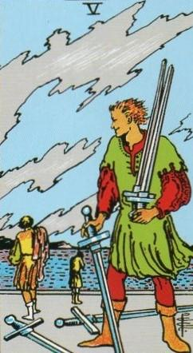
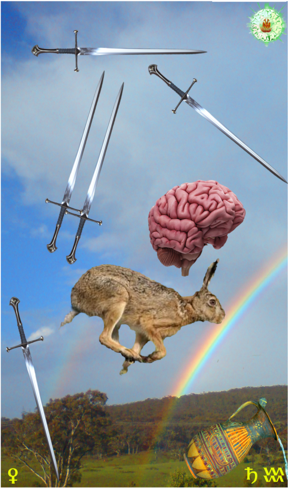
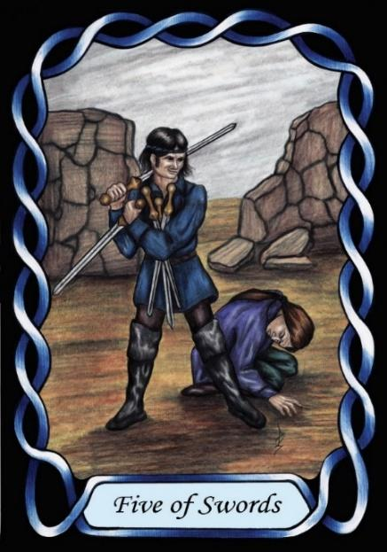

Five of Swords



Sign |
|
Eleven - Friends |
|
Sign Ruler |
|
Element |
Air - interaction |
Modality |
|
Symbol |
Water Carrier |
Decan |
|
Decan Ruler |
|
Time |
Jan 21 - 29 |
Genius Aquarius I
An Apprentice in the domain of friends and interaction, is ruled by Saturn and Venus. Saturn craves power through knowledge, and Venus craves love. The Apprentice collects the Swords of knowledge, hoping this will gain him power, love, respect and social standing, but instead he becomes a would-be expert in every topic imaginable, and drives friends and peers away. He needs wisdom in order to wield the Swords of Air without alienating those he would attract. The vanity of Venus manifests in pride of their mind, rather than physical beauty.
Goldschneider Personology
These people have quick, capable minds that can make them appear precocious when young. However, their quick wit can lead them to shallowness, and to thoughts that they can generate quickly. They will benefit from the company of others who will show them how to slow down and study all aspects of a problem, to provide deeper analysis.
RWS Imagery
An intelligent Aquarius-one with the expression of a winner is quick in picking up dropped Swords, smug in their superior intellect, happy to gain from the loss of others.
Summary
The Swords warns against intellectual arrogance, highlighting the importance of balancing knowledge with empathy and humility.